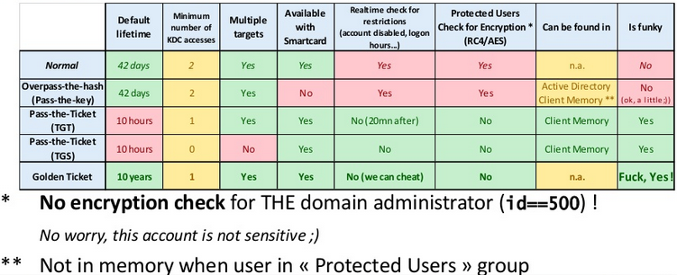

So, in essence, to get a TGT you need
1) correct time
2) username
3) key for username
4) name of DC / domain.
Ben's 'overpass the hash' method uses Mimikatz to set the hash/user/domain in memory on a Windows box. Then when you request a service using that credential, Windows will automagically ask for the TGT and any subsequent service tickets. Sometimes it is a bit fiddly to get the right Kerberos information to make it work since some places prefer to use the netbios name everywhere, but it's not too hard to figure out if you have enumerated the domain controllers.